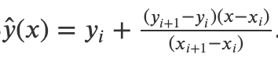
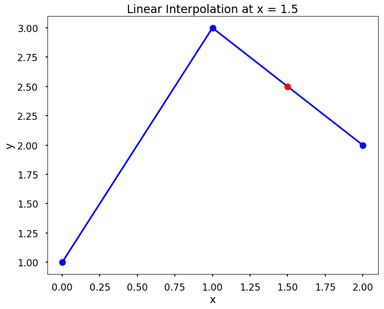

Interpolation
Note
Semua codingan yang ada disini jika di copy paste sama persis akan dianggap sebagai kecurangan
Interpolasi adalah proses memprediksi hasil kalkulasi dengan memperhatikan data-data lain yang kita miliki.
Interpolasi merupakan sebuah teknik untuk memprediksi angka yang hilang pada urutan data atau list data yang dimiliki.
- Terdapat beberapa jenis Interpolation, seperti:
Linear Interpolation
Cubic Spline Interpolation
Newton Polynomial Interpolation
terdapat berbagai macam teknik Interpolation, akan tetapi yang akan kita pelajari adalah hanya yang disebutkan diatas.
Linear Interpolation
Linear Interpolation adalah method pada Interpolation yang digunakan untuk melakukan prediksi antara 2 atau lebih nilai yang sudah diketahui.
Interpolation adalah metode untuk menemukan nilai baru dari data yang sudah ditemukan sebelumnya.
formula pada interpolasi adalah sebagai berikut.
{kind=link}
Selanjutnya kita akan melakukan kalkulasi interpolation dengan berurut sebagai berikut.
from scipy.interpolate import interp1d
import matplotlib.pyplot as plt
Langkah awal yang perlu dilakukan terlebih dahulu adalah melakukan import library yang dibutuhkan.
Disini kita menggunakan sicpy.interpolate yang dapat digunakan untuk melakukan kalkulasi linear interpolation.
Selanjutnya kita juga menggunakan matplotlib.pyplot yang bisa digunakan untuk melakukan plotting hasil analisis yang sudah dilakukan.
x = [0, 1, 2]
y = [1, 3, 2]
Data diatas merupakan titik koordinat untuk koordinat x dan y.
f = interp1d(x, y)
y_hat = f(1.5)
print(y_hat)
Kode diatas ditujukan untuk melakuakan analisis dan perhitungan linear interpolation
dengan menggunakan rumus yang sudah tertera pada figure gambar diatas. Dalam kalkulasi ini ditujukan untuk menentukan berapa prediksi nilai koordinat y
jika titik koordinat x nya adalah 1.5.
plt.plot(x, y, '-ob')
plt.plot(1.5, y_hat, 'ro')
plt.title('Linear Interpolation at x = 1.5')
plt.xlabel('x')
plt.ylabel('y')
plt.show()
Kode berikut disiapkan untuk melakukan proses plotting dari koordinat x dan y beserta dengan titik koordinat y_hat
yang didapatkan dari hasil kalkulasi dengan menggunakan linear interpolation.
{kind=link}
Berikut adalah hasil plotting yang didapatkan dari hasil kalkulasi linear interpolation.
Berikutnya dibawah ini merupakan penjelasan full code dari interpolation.
# melakukan import library
from scipy.interpolate import interp1d
import matplotlib.pyplot as plt
# dataset array x dan y
x = [0, 1, 2]
y = [1, 3, 2]
# implementasi interpolation
f = interp1d(x, y)
y_hat = f(1.5)
print(y_hat)
# menampilkan hasil plotting
plt.plot(x, y, '-ob')
plt.plot(1.5, y_hat, 'ro')
plt.title('Linear Interpolation at x = 1.5')
plt.xlabel('x')
plt.ylabel('y')
plt.show()
Berikut adalah penjelasan lengkap dari Interpolation.